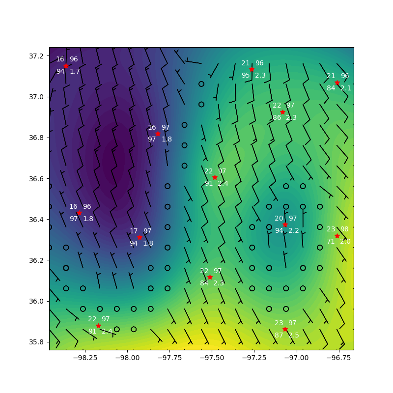

Note
Click here to download the full example code
Example for plotting up a contour plot¶
This is an example of how to prepare and plot data for a contour plot
import act
import glob
import matplotlib.pyplot as plt
files = glob.glob(act.tests.sample_files.EXAMPLE_MET_CONTOUR)
time = '2019-05-08T04:00:00.000000000'
data = {}
fields = {}
wind_fields = {}
station_fields = {}
for f in files:
obj = act.io.armfiles.read_netcdf(f)
data.update({f: obj})
fields.update({f: ['lon', 'lat', 'temp_mean']})
wind_fields.update({f: ['lon', 'lat',
'wspd_vec_mean', 'wdir_vec_mean']})
station_fields.update({f: ['lon', 'lat', 'temp_mean',
'atmos_pressure', 'vapor_pressure_mean',
'rh_mean']})
display = act.plotting.ContourDisplay(data, figsize=(8, 8))
display.create_contour(fields=fields, time=time, levels=50)
display.plot_vectors_from_spd_dir(fields=wind_fields, time=time, mesh=True,
grid_delta=(0.1, 0.1))
display.plot_station(fields=station_fields, time=time, markersize=7, color='red')
plt.show()
Total running time of the script: ( 0 minutes 1.400 seconds)